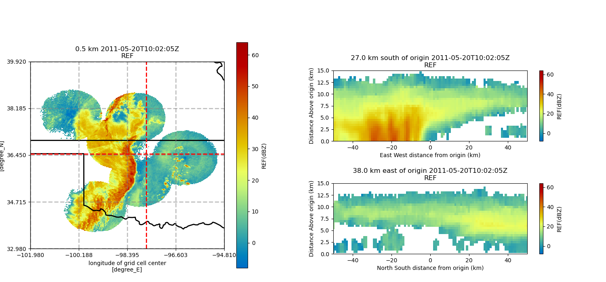

Note
Click here to download the full example code
Create a 3 panel plot using GridMapDisplay#
An example that creates a 3 panel plot of a PPI, latitude slice, and longitude slice using xarray and a cartopy background.
print(__doc__)
# Author: Jason Hemedinger
# License: BSD 3 clause
import cartopy.crs as ccrs
import numpy as np
import matplotlib.pyplot as plt
import pyart
from pyart.testing import get_test_data
# Read in the gridded file, create GridMapDisplay object
filename = get_test_data('20110520100000_nexrad_grid.nc')
radar = pyart.io.read_grid(filename)
display = pyart.graph.GridMapDisplay(radar)
# Setting projection, figure size, and panel sizes.
projection = ccrs.PlateCarree()
fig = plt.figure(figsize=[15, 7])
map_panel_axes = [0.05, 0.05, .4, .80]
x_cut_panel_axes = [0.55, 0.10, .4, .25]
y_cut_panel_axes = [0.55, 0.50, .4, .25]
# Set parameters.
level = 1
vmin = -8
vmax = 64
lat = 36.5
lon = -97.7
# Panel 1: PPI plot of the second tilt.
ax1 = fig.add_axes(map_panel_axes, projection=projection)
display.plot_grid('REF', 1, vmin=vmin, vmax=vmax,
ax=ax1,
projection=projection,
cmap='pyart_HomeyerRainbow')
display.plot_crosshairs(lon=lon, lat=lat)
# Panel 2: longitude slice
ax2 = fig.add_axes(x_cut_panel_axes)
display.plot_longitude_slice('REF', lon=lon, lat=lat,
ax=ax2,
vmin=vmin, vmax=vmax,
cmap='pyart_HomeyerRainbow')
ax2.set_ylim([0, 15])
ax2.set_xlim([-50, 50])
# Panel 3: latitude slice
ax3 = fig.add_axes(y_cut_panel_axes)
display.plot_latitude_slice('REF', lon=lon, lat=lat,
ax=ax3,
vmin=vmin, vmax=vmax,
cmap='pyart_HomeyerRainbow')
ax3.set_ylim([0, 15])
ax3.set_xlim([-50, 50])
plt.show()
Total running time of the script: ( 0 minutes 22.094 seconds)